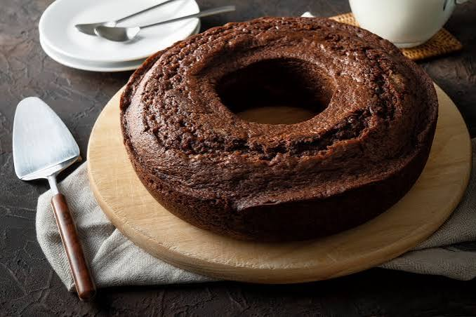

Massa: • 3 ovos • 1 e ½ xícara (chá) de açúcar • 150 ml de óleo • 200 ml de leite morno • 1 xícara (chá) de chocolate em pó (50% cacau) • 250 g de farinha de trigo • 1 colher (sopa) de fermento em pó • 1 colher (sobremesa) de essência de baunilha (opcional)
Misture no liquidificador 3 ovos, 1 e ½ xícara de açúcar e 150 ml de óleo por 3 minutos. Adicione 200 ml de leite morno e 1 xícara de chocolate em pó, batendo rápido. Transfira para uma tigela, misture 250 g de farinha de trigo peneirada e, por último, 1 colher de fermento. Asse a 180°C por 45 minutos. Para a calda, ferva 1 creme de leite, ½ xícara de açúcar, ½ xícara de chocolate e 1 colher de manteiga por 1 minuto e jogue por cima.
Preparando a Cobertura: 1. Cozinhe os ingredientes: Em uma panela, misture o creme de leite, o açúcar, o chocolate em pó e a manteiga. 2. Chegue ao ponto: Leve ao fogo médio e, assim que começar a ferver, cozinhe por mais 1 minuto mexendo sempre. 3. Finalize: Desenforme o bolo ainda morno e jogue a cobertura por cima antes de servir.